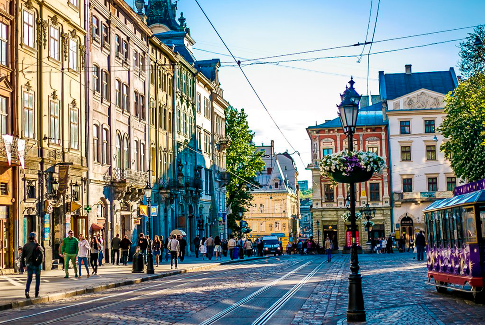

Народився: 10.05.2007 у Києві.
Освіта: 1-6 клас Гімназія "Домінанта", 7-11 клас Дніпровський технічний ліцей м. Києва, НТУУ "КПІ" м.Києва.
Львів — місто на заході України, адміністративний центр Львівської області, Львівського району, Львівської міської громади,
національно-культурний та освітньо-науковий осередок країни. Великий промисловий центр і транспортний вузол,
вважається сучасною столицею Галичини та найбільшим містом на заході країни.
